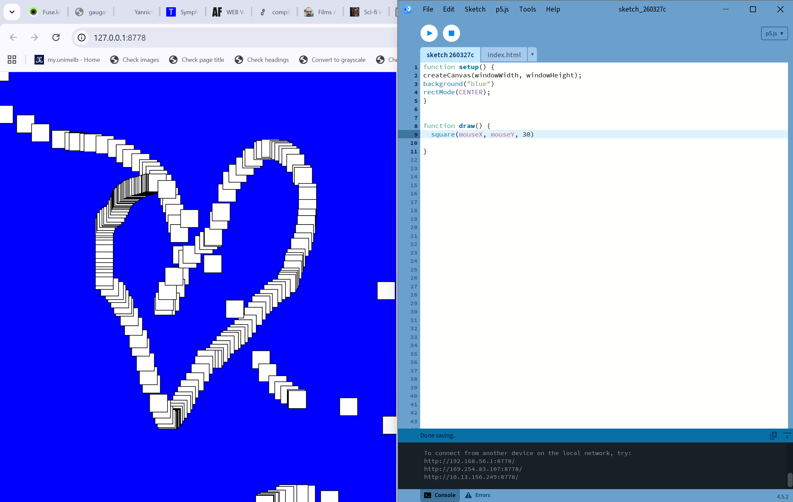
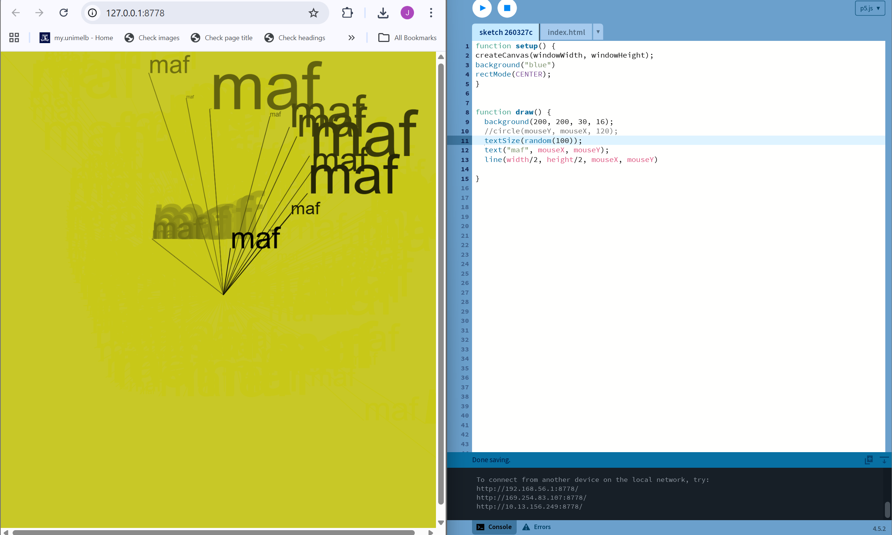
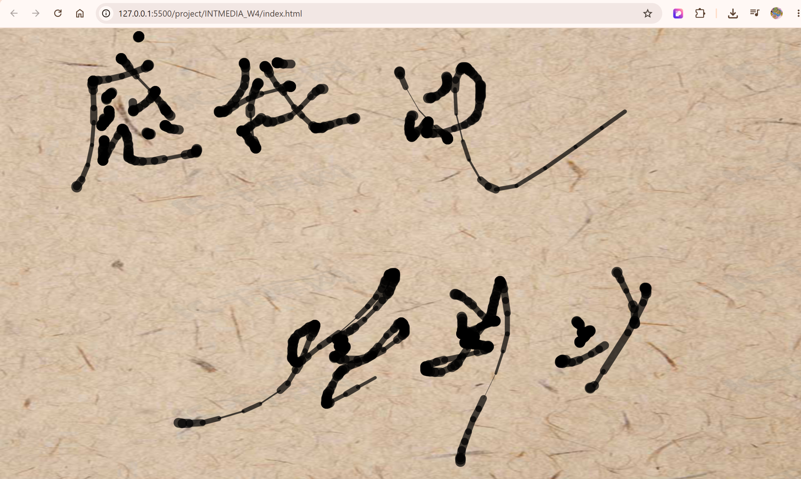

p5.js playground
intro to processing
This week was the first dip into p5.js, and I had a lot of fun playing around with it! I started with simple drawing functions using MouseX, MouseY, then switched it around by swapping MouseY instead of MouseX for a bit of a displaced feeling. Simple idea but it felt really satisfying to use. Having learnt coding in engineerng subjects before, the creative and visual side of coding feels far more engaging and free of restrictions.
The part I enjoyed most is the moments where I write something and unexpected changes happen on screen. Keen to keep exploring the possibilities! I've included some screenshots of my WIP and i-frames of live sketches below.


